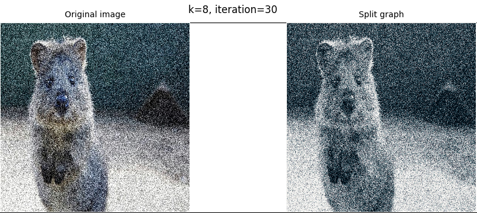

PAM算法——数据挖掘

1. 实现PAM算法对部分含有高斯噪声的waveform数据集进行聚类
1.1. PAM算法简介
- PAM方法于1987年提出，用于l1范数和其他距离的工作。
- k-medoid是一种经典的聚类分割技术，它将n个对象的数据集聚为k个聚类，假设聚类的数量k是先验的。如果未知，则可以使用诸如轮廓的方法来确定k。 与k均值相比，它对噪声和异常值更具鲁棒性，因为它最小化了成对差异的总和，而不是欧几里德距离的平方和。
- 可以将medoid定义为群集的对象，其与群集中的所有对象的平均差异最小。即，它是群集中位于最中心的点（迭代选取最中心的点，而非Kmeans的中心计算值，抗噪声能力更强）。
1.2. 编写Python程序实现PAM算法
PAM算法主要分为以下步骤实现：
- S1. 随机生成 k 个 “种子” 作为中心点
- S2. 将其余的对象划分至距离这k个类别中的最近的一个簇
- S3. 计算此时损失值cost。计算所有对象与其簇中中心点的距离值，将其全部累加得到损失值，记为cost0
- S4. 随机选择一个非中心对象Oi分别临时试替换k个簇中心对象中的一个，重新分簇，计算得到一个损失值cost
- S5. 如果这个损失值cost小于S3中得到的cost0，则将这个最小损失值计算时对应的非中心点和中心点交换，更新cost0
- S6. 重复S4~S6步骤，重复迭代直至收敛
1.3. 对部分含有高斯噪声的waveform数据集进行聚类
1.3.1. 加载’waveform-+noise.data’文件中的含噪声的数据
通过以下代码读取Waveform Database Generator (Version 2) Data Set中’waveform-+noise.data’文件内的所有数据，可看到数据的最后一列为类属性的标识号，由网页介绍可知,noise waveform数据规模为：5000 x 41，取含噪声waveform数据集的前500个数据样本进行聚类
1 | # 含噪声数据加载 |
1.3.2. PAM算法对waveform数据集进行聚类
1 | # PAM算法实现 |
设置最大迭代次数teration = 10, ‘种子’集群个数k = 3,对提取的500个含有高斯噪声的waveform数据集分类结果如下：
1 | center |
备注
运行平台：Arch Linux
运行环境：Intellij IDEA
含高斯噪声文件：waveform-+noise.data
源代码：pam.py
2. 编写Python程序实现PAM算法并对一副噪声图像进行分割
2.1. 加载含高斯噪声的图片的rgb数据
1 | def getImageRGB(file): |
2.2. 随机生成k个种子，返回k个随机像素点坐标
1 | def initCentroids(imageRGB, k): |
2.3. 随机选择一个非中心点Oi
1 | def chooseOneNoCenterSample(imageRGB, centers): |
2.4. 计算变量中每个像素点与k个中心点的欧式距离，并分簇
1 | def caclEucDistance(imageRGB, centers): |
2.5. 计算所有对象与其簇中中心点的距离值，将其全部累加得到损失值，记为cost
1 | def calcCost(imageRGB, features, centers): |
2.6. 显示分割前后对比图程序
1 | def showImage(imageRGB, centercolor, features, k, iteration): |
2.7. PAM算法对图片数据聚类实现
1 | def PAM(imageRGB, features, centers): |
2.8. 使用PAM算法对一副有噪图像进行分割完整主程序
1 | def main(): |
2.9. PAM算法分割图片效果图
2.9.1. 当最大迭代次数限制为10次时：
k=3时的效果图如下：
k=8时的效果图如下：
2.9.2. 当最大迭代次数限制为30次时：
k=3时的效果图如下：
k=8时的效果图如下：
通过反复运行测试，得出的结论基本与K-mean算法一致：在一定的迭代次数限制下，设置的种子数越多，图像分割越明显，细节越丰富；在一定种子数范围内，最大迭代次数越多，图像分割效果并不一定更好。并且程序的运行时间会随着集群k、最大迭代次数iteration的增加而增加。
3. 对比PAM算法与Kmeans算法
虽然经过反复测试运行代码，PAM与Kmeans算法对图片的分割效果与集群数k和最大迭代次数iteration的关系结论基本一致，总的来说PAM算法运行时间较长，复杂度也较高。但相比与K-means算法，PAM算法又有一定优势。由于选择的是中心对象而非平均值，所以如结果所示，受样本中的噪声的影响相对较小。
备注
运行平台：Arch Linux
运行环境：Intellij IDEA
含噪声图片：PamTestPicture.jpg
源代码：pamPicture.py
{kind=link}
相关文章